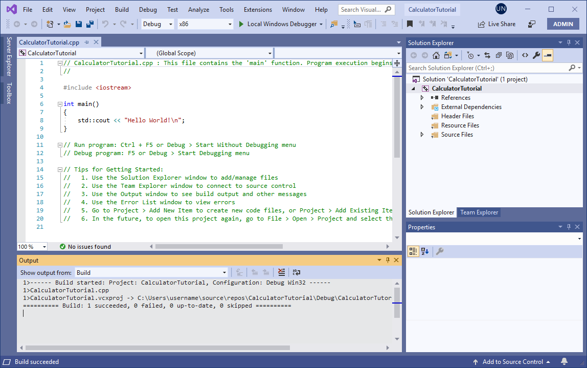

Intro
Is mulle-sde an IDE ?
According to Wikipedia “an IDE normally consists of at least a source code editor, build automation tools and a debugger.” Looking at a typical IDE like Visual Studio, its easy to identify the “Editor” (the “CalculatorTutorial.cpp” pane), a “Debugger/Terminal” (the “Output” pane) and the project manager (the “Solution Explorer” pane) all integrated into a single window.

For me, the “Editor” is not the best editor available, the “Terminal” is not the best terminal available, the “Solution Explorer” is not the best explorer available. An IDE is an integration of compromises.
mulle-sde has no editor or debugger. It doesn’t integrate, it leaves the tool choices up to me. So it’s not an IDE - it’s a software development environment (SDE). It is a meta-build tool, a project compositor, a virtual environment, a template generator and much more. It can be used inside IDEs though.
Install mulle-sde
mulle-sde-developer has the instructions on how to install mulle-sde. There are packages, script installers and a Dockerfile. For a quick start the script method is the easiest cross-platform method, which installs everything in your ${HOME} directory:
curl -L -O 'https://raw.githubusercontent.com/mulle-sde/mulle-sde/release/bin/installer-all' && \
chmod 755 installer-all && \
SDE_PROJECTS="mulle-sde-developer;latest" ./installer-all "${HOME}" no
Files will end up in ~/bin and ~/libexec and ~/share.
The basic mulle-sde system knows about C and C++ only. To support other languages and frameworks, you’d need additional developer packages like mulle-objc-developer or foundation-developer for mulle-objc
But for the scope of this pamphlet though, it will be mulle-sde-developer and C projects only.
Study a use case 🆕
- Manage the dependencies of an existing Makefile project
The fork in the road
Here the intro comes to a fork in the road. Choose your direction, depending on how you want to use mulle-sde:
- as a virtual environment
- as a template generator
- as a project compositor
- as a dependency fetcher and builder
- as a Makefile maintainer
- as a test suite with coverage 🆕
- as a definition isolator
A full mulle-sde project encompasses all these concepts.